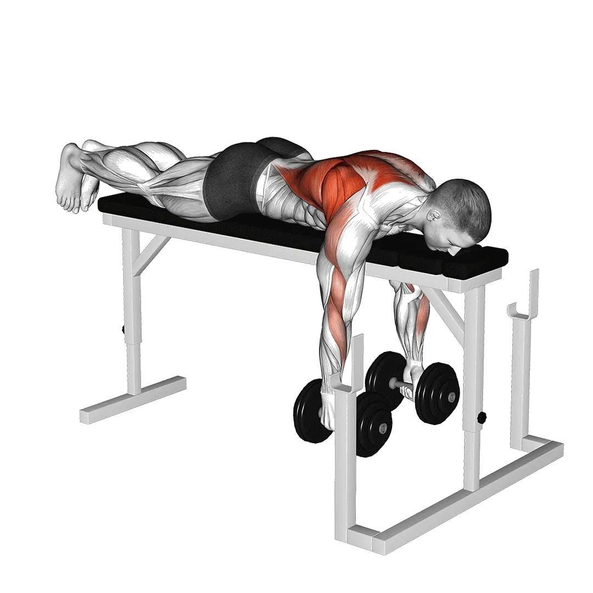

Kurzhantel-Bankziehen
Für Kurzhantel-Bankziehen kannst du Durchschnittsgewicht und Kraftstandards als Referenz für den Bereich Rücken vergleichen. Die Zielmuskulatur ist Latissimus, Trapezmuskel.

Durchschnittsgewicht: Mittelstufe
Richtwert für eine Person auf mittlerem Niveau.
Kurzhantel-Bankziehen: Durchschnittsgewicht [1RM]
| Level | ||
|---|---|---|
| Einsteiger | 11 kg | 5 kg |
| Anfänger | 22 kg | 10 kg |
| Fortgeschrittene | 39 kg | 17 kg |
| Erfahrene | 60 kg | 25 kg |
| Elite | 84 kg | 35 kg |
Hinweis: Diese Standards sind 1RM-Schätzwerte auf Basis durchschnittlicher Kraftsportlerinnen und Kraftsportler. Körpergewicht, Alter und andere persönliche Faktoren können die Werte beeinflussen. Die detaillierten Daten stehen in der Tabelle unten.
Dein aktueller Stand
Geschätztes 1RM und Level für Kurzhantel-Bankziehen
Berechne aus Gewicht und Wiederholungen das geschätzte 1RM und vergleiche es mit dem Körpergewichtsstandard.
Die Schätzung ist ein Richtwert. Technik, Bewegungsumfang und Ermüdung verändern das Ergebnis. Methode ansehen
Kurzhantel-Bankziehen: Kraftstandards(kg)
Männer nach Körpergewicht (kg) [1RM]
| Körpergewicht | Einsteiger | Anfänger | Fortgeschrittene | Erfahrene | Elite |
|---|---|---|---|---|---|
| 50 | 5 | 14 | 27 | 44 | 64 |
| 55 | 6 | 15 | 29 | 47 | 68 |
| 60 | 7 | 17 | 31 | 49 | 71 |
| 65 | 8 | 18 | 33 | 52 | 74 |
| 70 | 9 | 20 | 35 | 54 | 77 |
| 75 | 10 | 21 | 37 | 57 | 80 |
| 80 | 11 | 23 | 39 | 59 | 82 |
| 85 | 12 | 24 | 40 | 61 | 85 |
| 90 | 13 | 25 | 42 | 63 | 87 |
| 95 | 14 | 26 | 44 | 65 | 89 |
| 100 | 15 | 28 | 45 | 67 | 92 |
| 105 | 16 | 29 | 47 | 69 | 94 |
| 110 | 17 | 30 | 48 | 70 | 96 |
| 115 | 17 | 31 | 49 | 72 | 98 |
| 120 | 18 | 32 | 51 | 74 | 100 |
| 125 | 19 | 33 | 52 | 75 | 101 |
| 130 | 20 | 34 | 53 | 77 | 103 |
| 135 | 21 | 35 | 55 | 78 | 105 |
| 140 | 21 | 36 | 56 | 80 | 107 |
Männer nach Alter [1RM]
| Alter | Einsteiger | Anfänger | Fortgeschrittene | Erfahrene | Elite |
|---|---|---|---|---|---|
| 15 | 9 | 19 | 33 | 51 | 72 |
| 20 | 11 | 22 | 38 | 58 | 82 |
| 25 | 11 | 22 | 39 | 60 | 84 |
| 30 | 11 | 22 | 39 | 60 | 84 |
| 35 | 11 | 22 | 39 | 60 | 84 |
| 40 | 11 | 22 | 39 | 60 | 84 |
| 45 | 10 | 21 | 37 | 57 | 80 |
| 50 | 10 | 20 | 35 | 53 | 75 |
| 55 | 9 | 18 | 32 | 49 | 69 |
| 60 | 8 | 17 | 29 | 45 | 63 |
| 65 | 7 | 15 | 26 | 41 | 57 |
| 70 | 7 | 14 | 24 | 36 | 51 |
| 75 | 6 | 12 | 21 | 33 | 46 |
| 80 | 5 | 11 | 19 | 29 | 41 |
| 85 | 5 | 10 | 17 | 26 | 37 |
| 90 | 4 | 9 | 15 | 24 | 33 |
Frauen nach Körpergewicht (kg) [1RM]
| Körpergewicht | Einsteiger | Anfänger | Fortgeschrittene | Erfahrene | Elite |
|---|---|---|---|---|---|
| 40 | 3 | 7 | 12 | 19 | 28 |
| 45 | 4 | 8 | 13 | 21 | 29 |
| 50 | 4 | 8 | 14 | 22 | 31 |
| 55 | 5 | 9 | 15 | 23 | 32 |
| 60 | 5 | 10 | 16 | 24 | 33 |
| 65 | 6 | 10 | 17 | 25 | 35 |
| 70 | 6 | 11 | 18 | 26 | 36 |
| 75 | 7 | 12 | 19 | 27 | 37 |
| 80 | 7 | 12 | 19 | 28 | 38 |
| 85 | 7 | 13 | 20 | 29 | 39 |
| 90 | 8 | 13 | 21 | 30 | 40 |
| 95 | 8 | 14 | 21 | 30 | 41 |
| 100 | 9 | 14 | 22 | 31 | 42 |
| 105 | 9 | 15 | 23 | 32 | 42 |
| 110 | 9 | 15 | 23 | 33 | 43 |
| 115 | 10 | 16 | 24 | 33 | 44 |
| 120 | 10 | 16 | 24 | 34 | 45 |
Frauen nach Alter [1RM]
| Alter | Einsteiger | Anfänger | Fortgeschrittene | Erfahrene | Elite |
|---|---|---|---|---|---|
| 15 | 5 | 9 | 14 | 22 | 30 |
| 20 | 5 | 10 | 17 | 25 | 34 |
| 25 | 5 | 10 | 17 | 25 | 35 |
| 30 | 5 | 10 | 17 | 25 | 35 |
| 35 | 5 | 10 | 17 | 25 | 35 |
| 40 | 5 | 10 | 17 | 25 | 35 |
| 45 | 5 | 10 | 16 | 24 | 33 |
| 50 | 5 | 9 | 15 | 23 | 31 |
| 55 | 4 | 8 | 14 | 21 | 29 |
| 60 | 4 | 8 | 13 | 19 | 26 |
| 65 | 4 | 7 | 11 | 17 | 24 |
| 70 | 3 | 6 | 10 | 15 | 21 |
| 75 | 3 | 6 | 9 | 14 | 19 |
| 80 | 3 | 5 | 8 | 12 | 17 |
| 85 | 2 | 4 | 7 | 11 | 15 |
| 90 | 2 | 4 | 7 | 10 | 14 |
Hinweis: Das angegebene Kurzhantelgewicht bezieht sich auf eine einzelne Kurzhantel.
Zielmuskulatur
| Gruppe | Muskeln |
|---|---|
| Zielmuskulatur | Latissimus, Trapezmuskel |
| Sekundäre Muskeln | Deltamuskel, Bizeps |
| Stabilisatoren | Gerader Bauchmuskel, Rückenstrecker |
| Griff | Unterarmbeuger |
Tracking und Analyse in der Shiba App
Gewichte, Wiederholungen und Fortschritt an einem Ort.
Tabellenhinweise
| Level | Beschreibung | Verteilung |
|---|---|---|
| Einsteiger | Beherrscht die saubere Technik und trainiert seit mindestens 1 Monat regelmäßig. | Untere 5% |
| Anfänger | Trainiert seit mindestens 6 Monaten regelmäßig. | Top 80% |
| Fortgeschrittene | Trainiert seit mindestens 2 Jahren regelmäßig. | Top 50% |
| Erfahrene | Trainiert seit mehr als 5 Jahren regelmäßig. | Top 20% |
| Elite | Trainiert diese Übung seit mehr als 5 Jahren gezielt. | Top 5% |